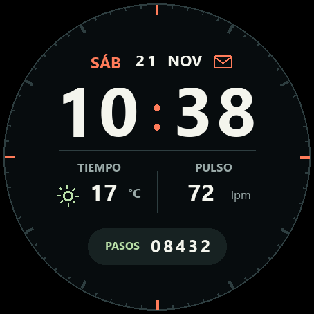

Pasos
pasos
pasos
lpm
kcal
Sin lecturas de pulso en este periodo.
| Fecha | Pasos | Distancia | Pulso medio | Sueño | Entrenos |
|---|

Hora, día, tiempo, pasos y último pulso de un vistazo. Un sobre indica si el reloj tiene mensajes pendientes.
Descargar esfera HWTDiseño para el Watch GT original de 46 mm. Pendiente de prueba en un reloj físico. Hay una vía documentada con Gadgetbridge en Android para este modelo. La instalación desde Huawei Health en iPhone sigue sin confirmar.
Guía de instalación de Gadgetbridge